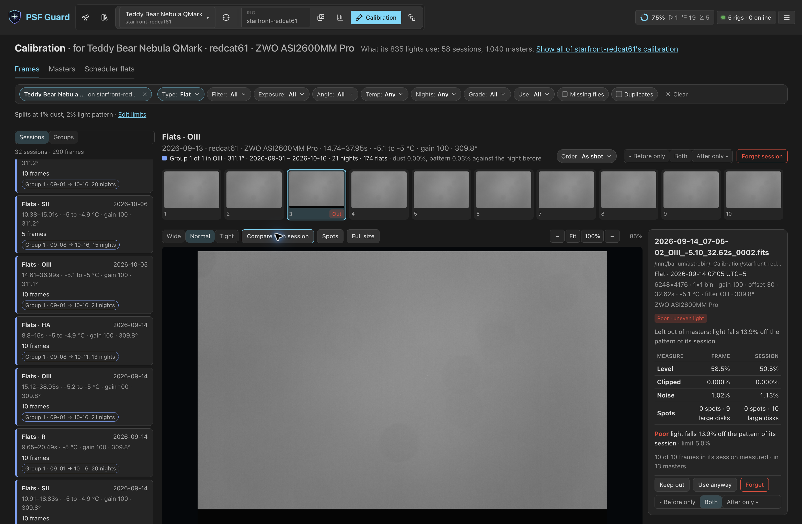

Calibration Libraries
Catalog bias, dark, dark-flat and flat frames beside the lights they serve. PSF Guard grades each frame, measures how a rig's flats change from night to night, matches conservatively, and builds masters when a stack needs them. The raw frames stay where they are.
Import reads headers only. Grading and flat measuring follow in the background; stacks, WBPP runs and exports then take the matching frames.
Calibration guides
- Calibration Libraries
- Calibration Grades & Coverage
- Flats & Dust Changes
- Calibration Masters & Settings
Add calibration frames
- In Settings › Databases, add the folders that hold the calibration files to the catalog's image directories.
- Run Import. Choose Calibration only to skip lights, and check the dry preview before applying it. Creating a database and the CLI use the same header-only scan, and automatic import can take new calibration frames on a schedule; see Import Images.
- Click Open Calibration on the database's calibration summary, or the header's Calibration tab, to see what arrived.
PSF Guard sorts frames by their IMAGETYP header:
| Library type | Header values |
|---|---|
| Bias | BIAS, OFFSET |
| Dark | DARK |
| Dark flat | DARK FLAT, DARKFLAT, FLATDARK |
| Flat | FLAT, TWILIGHT FLAT |
Twilight flats stay in the calibration library during folder imports and remote uploads. They never become light rows or exposure templates that could sync back to Target Scheduler. Masters from other software import too; see Masters from other software.
Calibration records live in PSF Guard's own tables inside the catalog. Pixels do not: records point at the raw files, and generated masters live in the calibration masters folder. Reading an untouched Target Scheduler database creates no tables, and a dry run rolls its changes back.
Rigs
A rig is the telescope, camera, sensor size and binning the headers
record. N.I.N.A. profile IDs are recorded beside it, so a copied database
carries its calibration library without tying it to one machine. Header
text counts as written: a renamed telescope, or a stray space in
TELESCOP or INSTRUME, makes another rig.
The Calibration page
The header's Calibration tab, between Sequence and Stacks, shows the library of the database in the header's scope: its sessions, frame previews, each frame's measurements beside its session's, and the masters built from them. On this page, the header's Rig · target control shows only the rig name. You can also open it from:
- Open Calibration on a database's calibration summary in Settings › Databases;
- Browse calibration in a project's coverage report;
- a night in an image's Calibration panel, which the 🧪 chip in Images and Sequence opens;
- Open in Calibration on a master in a stack's Masters inspector.
The page has three tabs: Frames, Masters, and Scheduler flats for Target Scheduler's flat coverage (see N.I.N.A. Sync Plugin). The URL stores every choice, from the filters to the frame and its stretch, so a reload or a shared link opens the same view. Viewers see the frames; editors also get the buttons that change them.

One project's calibration
Opened from a project's Images, Sequence or Stacks, or from its coverage report, the page shows only what that project's lights use: the sessions used to build their masters, the masters themselves, and the matching flat groups, on every rig the project was shot with. A chip such as M 44 on Askar 120 ✕ heads the filter bar. Its ✕, or Show all of Askar 120's calibration under the heading, widens to the rig's whole library. Choosing another project in the header moves the scope to it. Opened from the Library or the Sky, the page shows the whole library.
Sessions and frames
A session is the frames of one kind shot in one night with one set of capture settings, including for flats the filter and rotator angle and for darks the exposure and temperature. The list runs newest night first, each session with its frames counted by grade. A chosen session shows its frames as a thumbnail strip, in the order shot unless Order says otherwise, with one in the viewer. Sessions | Groups, at the top of the sidebar, lists flat groups instead.
| Filter | Keeps |
|---|---|
| Rig, Type | One rig's frames; Flat, Dark-flat, Dark or Bias. |
| Filter, Exposure | One filter, or one exposure. |
| Angle | Flats shot within 2° of one rotator angle. |
| Temp, Nights | Frames between two sensor temperatures, or between two nights. |
| Grade, Use | Poor, Suspect, OK or Not graded; Kept out or In use. |
| Missing files | Frames whose file is not on disk, or lies outside the database's folders. |
| Duplicates | Exposures recorded more than once; see Duplicates. |
Clear removes every filter and the project scope.
| Key | Action | Key | Action |
|---|---|---|---|
| ← / → | Previous or next frame | ↑ / ↓ | Previous or next session or group |
| C | Compare with session on or off |
The viewer keeps its zoom and position across a session's frames, so flipping through them compares the same place.
Frame previews
Each frame type uses a preview suited to its common defects. Block reduces the preview size while keeping hot pixels visible, and Full size draws the frame at its own resolution.
| Picture | Drawn as | Wide | Normal | Tight |
|---|---|---|---|---|
| Flat | Divided by its own median, per CFA site on a colour sensor | ±50% | ±15% | ±3% |
| Flat, Compare with session | Divided by the median of its session's flats | ±10% | ±3% | ±1% |
| Bias, dark, dark flat | Around its median, in noise sigmas: banding shows as stripes, hot pixels as white points | ±30σ | ±6σ | ±2σ |
Compare with session needs three flats in the session. What every flat shares, dust and vignetting, divides out; what changes from flat to flat, such as dew drying off the window, stays. Stars in tracked sky flats appear neutral gray so they do not look like dew. Stepping through the flats keeps the comparison and the zoom.
One frame
The panel beside the viewer gives the frame's file, capture time and
settings, its grade and main reason, and each grading measurement beside the session
median: for a flat its level, clipped share,
noise and spots, such as 15 spots · 3 large disks; for a bias
or dark its level and spread in ADU, noise, row and column banding and hot
pixels. Below the measurements, the panel lists each exceeded limit beside the measured
value. An editor gets Keep out, Use anyway and
Clear, the validity marks and
Forget.
Forget removes the frame's catalog record, every master built from it, and every master built on those. The FITS file stays. The session's header has Forget session and the validity marks for every frame of the session.
The Masters tab
Masters lists every master the library recorded, newest first: its type, filter or exposure, and its source frames with their nights and temperatures, when it was built, and the projects whose latest stacks use it. Badges mark a bias or dark master of fewer than five frames (Thin), a flat master whose set carries changing spots (Poor · spots or Suspect · spots), one the flat check Set aside, one from Other software, and a Missing file. View opens the master in the inspector a stack's Masters button opens, with a display stretch, zoom and an unchanged FITS download, and no stack needed. Clear generated masters, under ⋯, removes every generated master and keeps every raw frame and record.
Nights
A night runs from local noon where a frame was shot to the next local
noon, as N.I.N.A.'s DATEMINUS12 folders date it. Dusk flats,
the night's darks and the next dawn's flats share one date, and a dawn flat
run never splits in two. Sessions, grades, flat groups, the coverage report
and export folders all use these nights. Noon comes from the first of these
that a frame has:
- its rig's Rig's time zone setting, a UTC offset (Automatic (from frames) by default);
- the site longitude in its header (
SITELONG, the N.I.N.A. profile's site); - its computer's clock (
DATE-LOClessDATE-OBS); - where its rig usually is;
- the daytime hours when the catalog's lights are never captured.
A rig taken to a star party keeps its home nights. Set Rig's time zone for a rig whose frames record no site and whose clock is wrong too, such as a remote rig kept on UTC. After the upgrade, Reading frame sites in the header's job line reads each older frame's site once, with Stop, and tries again while the server runs if the NAS is not mounted. PSF Guard then grades and groups those rigs again, and measures only the flat runs that were split.
The Calibration page shows capture times in the rig's local time with its UTC offset,
such as 2026-08-11 06:23 UTC−7. Master build times use your local time.
Images and Sequence split lights at each rig's
noon too. Nights end, in Settings › Calibration, puts them
back on one split for the whole catalog with Same time for all
rigs.
Duplicates
Capture software may save frames in one folder before you move them into your calibration library. A frame on disk twice is catalogued once: when the original goes, its row moves to the copy and keeps its grade, marks and masters. Two files count as one exposure only when kind, capture time to the second, file name, rig, capture settings and file size agree, and, with both on disk, their first and last 32 KiB match.
An older import may have recorded one exposure twice, and a master built from both may have averaged it twice. To merge them:
- Tick Duplicates among the Calibration page's filters. The view lists each exposure recorded more than once, which of its files are Missing, which row a repair keeps, and when it was checked. Check again checks at once. Any account may check.
- Click Repair duplicates…. The preview shows how many rows will merge and which masters need rebuilding, across every rig and type whatever the filters show.
- Click Apply. Each exposure keeps its oldest row, moved to a live copy when its own file is gone, with the grade, newest choice and validity mark carried over. Masters built from merged rows build again.
The check and the repair run as jobs, on the page and in the header's job
line (Checking files 812 of 2,140, then Merging 37 of
203), with Stop. A stopped repair writes nothing.
Apply checks the files again and, if the plan changed, shows the new plan
instead. The repair does not move or delete files, and a later pull from a catalog that
still has the duplicates does not bring them back. Repairing needs database
management: the desktop app, or a server started with
--allow-database-management.
From the command line
# Preview the duplicate repair, then apply it
psf-guard calibration repair-duplicates scheduler.sqlite --dry-run
psf-guard calibration repair-duplicates scheduler.sqlite
# Measure flat groups on a copy; the catalog is only read
psf-guard flat-groups scheduler.sqlite --work ./flat-work --lights --report flat-groups.jsonrepair-duplicates holds a lock beside the catalog, so a
server and the command line never repair one catalog at once. On a dry run
against a catalog from another machine, --map-prefix
/mnt/share=/Volumes/share reads its paths through this machine's
mount. flat-groups copies the catalog into --work,
measures there, and prints the groups, splits and changes;
--images finds the lights for pixel evidence,
--lights says how each light's flats would be chosen, and
--report writes JSON. It never writes the catalog or a frame.
See CLI Reference.
Calibrated copies
Calibrated and registered copies that WBPP, Siril, ASTAP, DeepSkyStacker and other tools write are paired with the light each came from, instead of importing as extra lights. A calibrated copy with no raw frame becomes the light until the raw arrives. Stacks still read the raw frames and calibrate them from this library. See Import Images.
Move a catalog
Merge catalogs and sync pull copy rigs,
profile bindings, raw calibration records with their grades and validity
marks, Keep out and Use anyway choices,
flat groups split or joined by hand, lights put on a side of a change, and
duplicate repairs. Where both catalogs hold a choice, the later one wins.
The transfer preview counts the choices a pull brings, since each changes
the destination's masters. They do not copy generated masters, whose paths
belong to the source machine. The destination finds stale raw paths by file
name under its own image folders and builds its own masters.
PSF Guard 0.11 keeps working on a catalog this version has graded. It leaves out the darks graded for stray light and ignores the other grades and choices.
Troubleshooting
| Symptom | Check |
|---|---|
| No calibration summary | Add the calibration folder to the catalog, run Import, and confirm IMAGETYP gives the frame type. |
| No matching master | Open the light's Calibration panel: Refused gives the reading that disagrees and the limit. |
| A night has no flats | Open the coverage report. If a rotator moved, raise Flat rotation or shoot new flats. |
| Darks from another season used | Lower Dark reach, or mark validity boundaries. |
| Fewer frames than expected | Set Grade to Poor, or Use to Kept out. Use anyway puts a frame back. |
| A project shows 🧪 Poor or Check | Open its coverage report; Quality lists each finding. For a rig whose workflow is sound but unusual, set that check to Check only or Off for the rig. |
| Flats from across a change | Compare the change in Groups. If it is not real, Join the groups; if the light's side is known, set it in its Calibration panel or with Flat side…. |
| Nights split at the wrong hour | Set Rig's time zone for that rig. |
| Row banding in a calibrated stack | Open Masters on the stack. A dark or bias master of two or three frames, or warmer than the lights, adds its own noise. Keep Dark choice on Complete set first. |
| Lights left out under can't calibrate | Frame decisions gives each reason. Add the missing frames, raise Flat age limit, or turn off Leave out lights that can't be calibrated. |
| One exposure listed twice | Tick Duplicates and run Repair duplicates…. |
| Flat makes edges brighter | Use Auto and import bias or dark frames. Force on can apply a flat whose pedestal was not removed. |
| Stars in a sky-flat master | Dither or let the sky drift between flats, or turn on Mask stars in flats. |